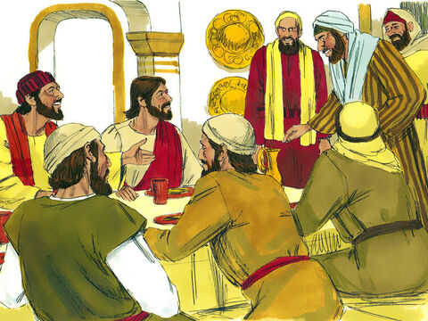
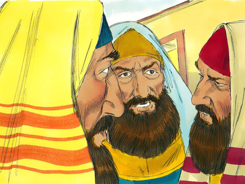
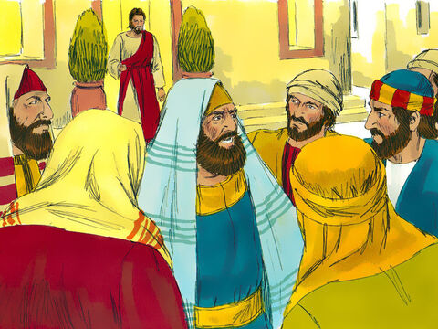
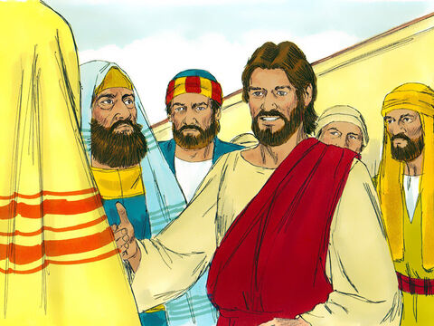

"I Will Have Mercy, And Not Sacrifice" - Lord Jesus
And it came to pass, as Jesus sat at meat in the house, behold, many publicans and sinners came and sat down with him and his disciples.
And when the Pharisees saw it, they said unto his disciples, Why eateth your Master with publicans and sinners?
But when Jesus heard that, he said unto them, They that be whole need not a physician, but they that are sick.
But go ye and learn what that meaneth, I will have mercy, and not sacrifice: for I am not come to call the righteous, but sinners to repentance.
Matthew 9:10-13
- 
- 
- 
- 